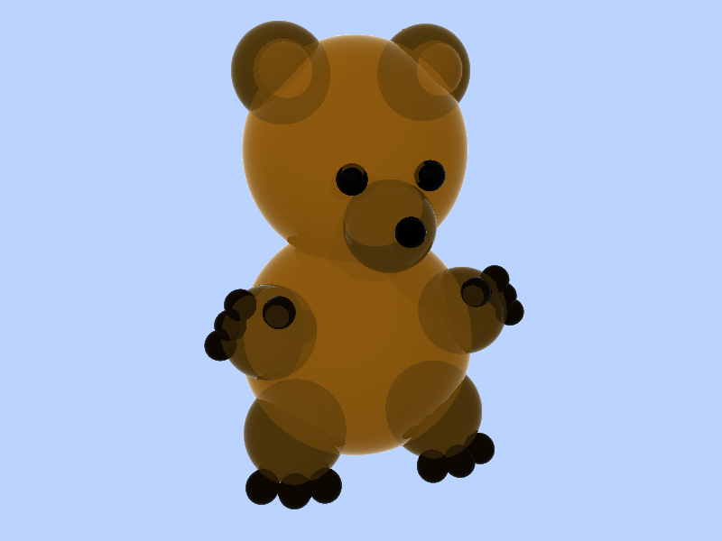
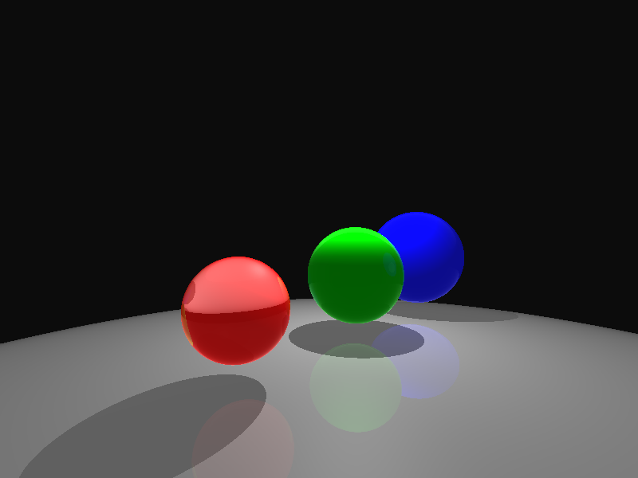
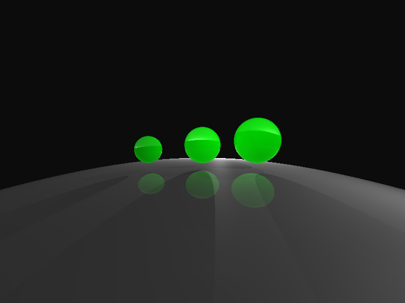

showcase of project 3a: ray tracing 1
by tracy pham and mary duong
Rendered scenes
1. Sample Images
bear.txt

spheres1.txt

camera.txt
camera angle and multiple point light

2. spot_sphere
3. spheres1
4. spheres2
Additional features we (attempted to) implemented
- PNG output
- Shadows
- Multiple Light Sources
- Refraction
- Reflection
Difficulties we encountered
Tracy and I (Mary) collaborated on this project since we were able to work together for Project 3a. Despite having a partner, we still encountered challenges with the raytracer. In particular, we found the ApplyLightingModel() function difficult to implement correctly, especially when handling material refraction. One thing that helped us significantly was using the pseudocode and our experience from HW3, which provided a clear structure and a solid foundation for our code. Much of our implementation built on the HW3_Vec3 files, and we then made several modifications: tweaking the parser, adding a struct to track ray intersections, and implementing ray recursion to apply lighting and material effects. However, as mentioned, we struggled to make our final rendered images match the expected results. We suspect that the issues may stem from how we handle refraction or reflection within ApplyLightingModel().
link to download project files (change to zip file later)